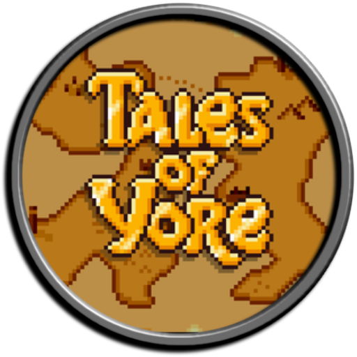
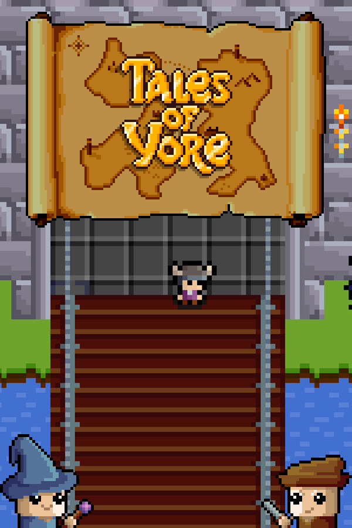

 Tales of Yore
Details
|  | |
| Playtime | Not Played |
| Last Activity | Never |
| Added | 5/06/2025 3:25:11 |
| Modified | 8/06/2025 5:32:23 |
| Completion Status | Not Played |
| Library | Steam |
| Source | Steam |
| Platform | Macintosh PC (Windows) |
| Release Date | |
| Community Score | |
| Critic Score | |
| User Score | |
| Genre | Adventure Free To Play Indie Massively Multiplayer RPG |
| Developer | |
| Publisher | |
| Feature | Co-Op Cross-Platform Multiplayer In-App Purchases MMO Multi-Player Online Co-Op Partial Controller Support |
| Links | Community Hub Discussions Guides News Store Page PCGamingWiki |
| Tag | 2D Action Roguelike Action RPG Casual Character Customization Choices Matter CRPG Cute Exploration Family Friendly Fantasy Fishing Loot Medieval MMORPG Open World Pixel Graphics Roguelike Roguelite RPG |
Description

Welcome to Tales of Yore, a world full of adventure, questing and excitement. Choose one of hundreds of paths in the world, earn your rewards and customise your character with the spoils. Own pets, houses and glorious hats all in the beautifully detailed pixel art world spanning more than 250,000 tiles. Rich sound effects and an original sound track accompany your journey through the world. Save the princess, solve the mystery and don’t forget to deliver that sandwich. Open world exploration, alone or with a party, awaits new MMORPG players and old hands alike. Come, play it your way, start today and begin writing your Tale of Yore

Pick up a sword, a bow, a mace or even a carrot and get in there and slay some evil monsters. From rats to skeletons, beholders to giants, the world of Yore is infested with evil creatures who a good hero should vanquish. The rewards are high when facing over 100 types of creature, each of which have their own statistics, fighting style and weaknesses. Learn more than 20 combat abilities and find more epic weapons and armour to further enhance your damage dealing prowess!

If fighting isn’t your style or you simply like to be a master of all things, you can opt to learn more than 30 spells ranging from lighting up areas, protecting yourself and your party, to dispatching enemies with magical flame and lightning. The path of magic will take you across the vast world in search of teachers and magical reagents to increase your sorcery skill. Be wary though traveller, the magical arts are powerful but require sacrifices in your choice or armour and weapons. Learn to balance your immense power with self preservation against the strongest of foes!

The world of Yore allows players to experience the full breadth of the world without killing anything. Choose the way of the crafter, learn the 50+ recipes already in the world and create items that can be sold to citizens of Yore and players alike. Make weapons and armour, tailor hats and other clothing, cook up classic dishes with magical properties, create unique arrow types and brew potions. The way of the crafter is complex and intricate but a rewarding one.

The world of Yore provides rich resources from precious gems and ores to simple vegetables and other plants. Enter the miners, the foragers, the lumberjacks and not to forget the fishermen who roam the land collecting, harvesting, converting and sometimes selling the various items available to those with the right tools. Progress your character through levels of expertise, find taxing and dangerous gathering spots to get that very special and valuable resource.

Think you’ve completed the current content? Think again! There are 100s of epics, rares and the mighty legendary items to find. Can you locate the mythical carrot fish? Found all the items? Have you found all the treasure map items? What about obtaining the key to each city by completing procedurally generated jobs? Obtained the 50+ in game and steam linked achievements? If you’ve finished all of that then remember the game is still in active development and new content drops every month!
Come, join us in the fun and friendship that is Tales of Yore!